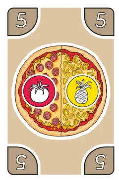

機械翻訳 – ネイティブスピーカーによる確認はまだ行われていません。 Report a translation error
Pizza Love® カードゲーム
一つのデッキで三つのゲームが遊べます。まずはPizza Partyから始めましょう。いちばん早く覚えられます。
- 2–5人
- 6+
- ピザカード42枚
- トッピングカード58枚
- 5–15分
ピザの作り方

ピザカード
ピザカードには、一～四種類のトッピングがのったピザが描かれています。カードの四隅には、ピザの値（1–10）が書かれています。ゲームには、値10のハートピザが10枚入っています。

トッピングカード
トッピングカードには、トッピングが一つ描かれています。カードの四隅には、トッピングの値（1–10）が書かれています。3枚のファンタジートッピング（X）は、どのトッピングとしても使えます。
基本ルール
ピザカードはいつもテーブルの上にあります。ピザは手札のトッピングカードで作ります。
ピザの値
自分のトッピングカードでピザを作り、ピザの値になる計算を声に出して言います。答えがピザの値になれば、どんな計算でもよく、組み合わせてもかまいません。たとえば 5 = 10 : 2。
例：トマトとパイナップルのピザ

= :
:

このピザの値は5です。計算の答えが5になれば、どのトッピングカードでも作れます。たとえば 4 + 1、6 – 1、2 + 3、10 : 2。
どんな計算でもOK
たし算、ひき算、かけ算、わり算のほかに、累乗、対数、階乗なども使えます。たとえば 5 = 2² + 1 や 5 = 3! – 1。みんな自分のレベルで計算します。
ピザの作り方は三通り
やり方のちがいは、使ってよいトッピングカードです。どの例も同じピザ（トマトとパイナップル、値5）を使います。
1. どのトッピングでもOK
#1 Pizza Party
どのトッピングカードでも、好きな枚数だけ使えます – 一枚だけでもOK。大事なのは値だけです。
5 = 5 · 5 = 4 + 1 · 5 = 7 + 6 - 8
2. サルのBassoのやり方
#1 Pizza Party（追加チャレンジ） · #2 Pizza Basso
ピザのトッピングの数と同じ数のちがうトッピングを使います。そのピザにのっているトッピングでなくてもかまいません。カードはもっと多くてもよく、たとえば同じトッピングを二枚使えます。
#1 Pizza Partyでもためしてみましょう。少しむずかしくなりますが、ゲームがもっと楽しくなります。
トマトとパイナップルのピザにはトッピングが二つあるので、カード一枚では足りません。
5 = 10 : 2 · 5 = 2 + 2 + 1
3. 正しいトッピング
#3 Pizza Love
そのピザとまったく同じトッピングでピザを作ります。
トマトとパイナップルのピザには、トマトとパイナップルが必要です。
5 = 2 + 3

Bruno？それともBasso？ ゲームのサルの名前は、今はBassoです。古いルールや動画ではBrunoという名前で、二つ目のゲームモードはPizza Brunoと呼ばれています。ルールは同じです。
三つの遊び方
ゲームモードを開くと、ルールと動画が見られます。
#1Pizza Partyはじめてにいちばんかんたん、すばやくにぎやか · 約5分
動画
目的
プレイヤーは競争してピザを作ります。ピザカードかトッピングカードがなくなるまでに、いちばん多くピザを作った人が勝ちです。
準備
- ピザカードを混ぜて、全員の手が届くところに山にして置きます。
- トッピングカードを混ぜて、各プレイヤーに5枚ずつ配ります。残りは山札にします。自分のカードは見てかまいません。
ゲームの始め方
最初のピザカードを、山のとなりに表向きにします。全員がすぐに、自分のトッピングカードでそのピザを作ろうとします。
遊び方
- このゲームには手番がありません。全員が同時にピザを作ろうとします。
- ピザを作るには、自分のトッピングカードをテーブルのピザの上にたたきつけ、計算を声に出して言います。いちばん早かった人がピザカードをもらい、自分の前に集めます。
- 何人かが同時にたたきつけたときは、いちばん下にカードがある人がピザをもらいます。
- 使ったトッピングカードはゲームから取り除きます。手札がまた5枚になるまで、新しいカードを引きます。
- すぐに新しいピザカードを表向きにします。ピザカードかトッピングカードがなくなり、だれもピザを作れなくなるまで続けます。
ピザが作れないとき
だれもテーブルのピザを作れないか、作りたくないときは、その上に新しいピザカードを表向きにします。次のピザを作った人が、テーブルにあるピザをすべてもらいます。
得点と勝ち方
ピザの得点は、のっているトッピングの数と同じです。ハートピザは一点多くもらえます。たとえば、トマトとパイナップルのピザ = 2点。
いちばん多く得点を取った人がラウンドの勝ちです。何ラウンド遊ぶかをみんなで決めてください。たとえば、先に3ラウンドか5ラウンド勝った人がゲーム全体の勝者です。
手番制のPizza Party
手番を決めて遊ぶこともできます。そうすれば、全員が自分の手番にゆっくり考えられます。
オプションルール
計算を制限するルールを決めることもできます。たとえば：
- たし算とひき算だけで遊ぶ
- どのピザでも、かけ算かわり算を使わなければならない。
#2Pizza Basso落ち着いていてドキドキ · 約7分
動画
目的
プレイヤーは手札をなくすこと、つまり手札のトッピングカードをすべて出しきることを目指します。最初にできた人がラウンドの勝ちです。
注意：ピザはサルのBassoのやり方で作ります。
準備
- ピザカードを混ぜて、全員の手が届くところに山にして置きます。
- トッピングカードを混ぜて、各プレイヤーに7枚ずつ配ります。残りは山札にします。自分のカードは見てかまいません。
ゲームの始め方
最初のピザカードを、山のとなりに表向きにします。最後にピザを食べた人から始めます。
遊び方
プレイヤーは自分の手番に、自分のトッピングカードでテーブルのピザを作ろうとします。
A) 作れたとき：使ったトッピングカードをゲームから取り除き、山から新しいピザカードを前のピザの上に表向きにします。次のプレイヤーの手番になります。
B) 作れないとき、または作りたくないとき：トッピングカードを一枚引きます。次のプレイヤーの手番になります。
C) 残り一枚：手札のトッピングカードが残り一枚になったら、おなかをすかせたサルのBassoのまねをして「ピッザーーー！」とさけびます。
トッピングカードがなくなったら
取り除いたトッピングカードを混ぜて新しい山札にし、続けます。
得点と勝ち方
最初にトッピングカードをすべて出しきった人がラウンドの勝ちです。ほかのプレイヤーの手札に残ったカードの値を合計します。その合計が勝った人の得点です。ふつうのトッピングはその値（1–10）、ファンタジートッピングは20点です。
最初に100点に達した人が勝ちで、Pizza Basso – 真のピザザルの称号をもらえます。
短いゲーム
たとえば30点か50点でゲームを終える、または先に3ラウンドか5ラウンド勝った人をゲーム全体の勝者にする、と決めることもできます。
#3Pizza Loveいちばん戦略的でむずかしい、8+ · 約15分
目的
プレイヤーは、ほかの人より先に自分のピザをすべて作ろうとします。最初にできた人の勝ちです。
注意：ここではトッピングが大事です。ピザは正しいトッピングでしか作れません。
準備
- ピザカードを混ぜて、各プレイヤーに8枚ずつ配ります。プレイヤーはそれを裏向きの山にして自分の前に置き、いちばん上のカードを表向きにします。
- ピザカードを一枚、テーブルの中央に表向きに置きます。これが交換ピザです。残りのピザカードはゲームから取り除きます。
- トッピングカードを混ぜて、山札としてテーブルに置きます。
ストック
各プレイヤーは、ストック置き場を4つ持っています。ストックのトッピングカードは表向きに置きます。手札と同じように自分のピザに使えます。ほかのプレイヤーも交換に使えます。
ゲームの始め方
最後にピザを食べた人から始め、トッピングカードを5枚引いて手札にします。
遊び方
- 手札が5枚になるまで、トッピングカードを引きます。
- 手札とストックのカードで、自分の山のいちばん上のピザを作ってみます。
- 計算を使って、自分のストックのカードをほかのプレイヤーのストックカードと交換できます。
- 一回の手番に一度だけ、自分の山のいちばん上のピザと交換ピザを入れかえられます。自分のピザは中央に残って新しい交換ピザになり、交換ピザは自分の山の上にのります。もらったピザはすぐに作ってかまいません。
- 手番の最後に、手札からトッピングカードを一枚、表向きで自分のストックに置きます。
注意：ストックにカードを置く前に手札がなくなったら、新しいカードを5枚引いて手番を続けます。
ピザを作る
必要なトッピングが手札やストック（またはその両方）にそろったら、ピザを作ります。ピザカードと使ったトッピングカードはゲームから取り除きます。自分の山から次のピザカードを表向きにします。そのトッピングを持っていれば、すぐに作ってかまいません。
ハートピザ
ハートピザを作ったら、自分の次のピザカードを見ないで、ほかのプレイヤー一人にわたします。その人はそれを自分の山のいちばん下に入れます。
ストックカードの交換
自分のストックのカードをほかのプレイヤーのストックカードと交換して、必要なトッピングを手に入れます。
- わたすカードともらうカードは、計算して同じ数にならなければなりません。どんな計算でもかまいません。
- 交換は断れません。
- もらったカードは自分のストックに置きます。
- 一回の手番に何回か交換してもかまいません。一回の交換は、いつもほかのプレイヤー一人とだけ行います。
- 交換できるのは、いちばん上のカードだけです。
ストックへの置き方
- ストック置き場は、どの順番でうめてもかまいません。
- カードは重ねて置けます。使ったり交換したりできるのはいちばん上のカードだけなので、重ねるとカードを交換から守れます。そのとき、そのカードは自分も使えなくなります。
- ストックのカードは動かしてはいけません。
ゲームの勝利
だれかが自分の山のピザをすべて作ったら、ゲームは終わりです。

印刷用ルール
三つのゲームモードをすべて日本語で – 両面一枚のシートで、折りたたむとゲームの箱に入ります。

次は：Pizza Love® ボードゲーム
同じピザの世界をゲームボードで。ピザの箱たちの大好きなピザを作り、ちがう種類のピースを10枚、最初に集めましょう。遊び方は三通りで、協力ゲームもあります。